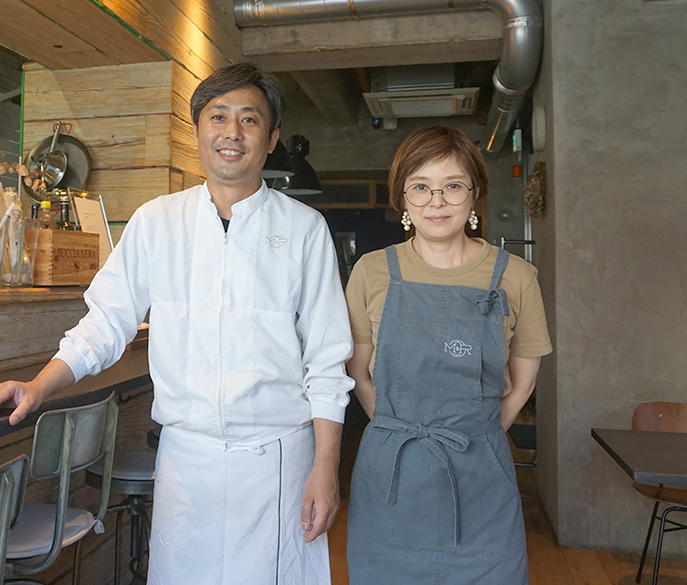

REVIEW
街の声近隣地域にお住まいの皆様にインタビュー
「シエリア松山市駅」周辺にある、
暮らしを華やかに彩るショップをインタビュー。
「シエリア松山市駅」の徒歩圏には、おいしい時間を味わえるカフェやレストラン、自分磨きを愉しめるヘアサロンやヨガスタジオなど、魅力的なショップが点在しています。
これから始まる暮らしを華やかに彩る、素敵なショップをインタビューしてきました。
Mario & Raffaella
「本当に美味しいものを、街で楽しく」。
多彩なスタイルを味わえる「欧風デリ」の名店。
もともとフレンチで修行したオーナーシェフの福岡さんが、
イタリア・トスカーナで出逢った夫婦「マリオ＆ラファエラ」のおおらかな人柄と、
そこで味わった素材の味を活かした料理にインスパイアされて4 年前にオープン。
フレンチをベースにしながら、イタリアンやスペインなどさまざまなスタイルを取り入れた「欧風デリ」を味わえます。
ランチは、全15 種のデリの中からお好みの5 品を選んでワンプレートに乗せる「デリカテッセンスタイル」。
ディナーは、ワインを片手に前菜のアラカルトをはじめ、パスタやメイン料理などを楽しめる「バルスタイル」。いずれも食通の舌を唸らせる絶品の美味しさです。
予約もしくは事前空席確認（当日でもOK）は必須ですが、「市駅エリア」で暮らすなら一度は訪ねたいお店です。
-
 これから「市駅エリア」はますます活気づいていくと思います。ぜひ、進化していくこの街での暮らしを愉しんでくださいね」とオーナーシェフの福岡さんご夫妻。 -

色とりどりの美味しそうな「欧風デリ」がカウンターを彩ります。 -

大きなガラス窓からやさしい光が届く、スタイリッシュな店内。
Mario & Raffaella
- 住 所
- 松山市千舟町５丁目２－６
- TEL
- 089-909-3277
- 営業時間
- 12:00 ～ 15:00(L.O.14:00)、
18:00 ～ 22:00(L.O.21:30) - 定休日
- 火曜日、第2 水曜日

mitra 1st
さまざまなシーンに
活用できる、開放感あふれるカジュアルダイニングバー。
「松山市駅」の目の前にあるダイニングバー。カジュアルな雰囲気の広々とした店内は、気の置けない友人たちとのコミュニケーションを愉しむのにうってつけ。最大80 名でのパーティにも対応できるほか、開放感あふれるデッキテラスではBBQ やビアガーデンを楽しめます。
店長のTAIKI さんのオススメメニューは、「チューリップのからあげ」。カリッとした食感と、ジュワッと広がる鶏の旨味がたまらない逸品です。また、パリパリ薄生地のピッツァや、激辛アラビアータなどのイタリアンメニューも充実。
さらに、スパークリングワインやカクテルなどドリンクメニューもバラエティ豊富で、さまざまなシーンに活用することができます。
-

「パーティのご相談などもぜひお気軽 に！」と店長のTAIKI さん。 -
最大80 名でのパーティも可能な店内。 爽やかな眺望が広がるデッキテラスは 開放感抜群です。 -
市駅から歩いてすぐのアクセス性も魅力。予約制のランチコースもぜひチェックを。
mitra 1st
- 住 所
- 松山市湊町４丁目11-6 2F
- TEL
- 080-7201-4464
- 営業時間
- 11:30 ～ 14:30（ 料理 L.O. 14:00 ドリンク L.O. 14:00）、
18:00～ 23:00（ 料理 L.O. 22:00 ドリンク L.O. 22:30）
木 : 18:00 ～翌 0:00（ 料理 L.O. 23:00 ドリンク L.O. 23:30） - 定休日
- 木曜日（ディナー予約のある日は営業）

BeeHIVE Rta☆☆
カット＆カラーリングに
定評あり。自分らしいスタイルが見つかるヘアサロン。
「まつちかタウン」から銀天街に入ってすぐ右手にあるヘアサロン。
生後数ヶ月の赤ちゃんからシニアまで、男女問わず幅広い世代に支持されています。
人気の秘訣は、カットとカラーリングの確かなテクニック。専任カラーリストも在籍し、髪型から染め色までトータルでプロデュースしてくれるところも魅力です。また、店長の岡田さんは「小顔矯正カット」という特許技術も取得。自分磨きをしたいなら、気軽に相談してみてはいかがでしょうか。
-
松山市三津出身の店長・岡田さんをはじめ、スタッフは気さくな人ばかりです。 -
大きなガラス窓から明るい光が届く店 内。男性ひとりでも気軽に入れるフレ ンドリーな雰囲気です。
BeeHIVE Rta☆☆
- 住 所
- 松山市湊町4 丁目４-８ BEAUTY BILD.2F
- TEL
- 089-945-1982
- 営業時間
- 10:00 ～ 20:00
- 定休日
- 月曜日

Pono Yoga
こころとカラダのセルフケアをサポート。
松山市で生まれ育った、ヨガ講師歴14 年の清水さんが営むアットホームな雰囲気のヨガスタジオ。
「Yoga を通じて、“善良に、そして優しく繋ぐこと、つながること” の素晴らしさを実感してほしい」という想いのもと、1 クラス約5 人という少人数制で丁寧にカラダとこころのメンテナンスをお手伝いしてくれます。
経験者はもちろん、初心者向けのものまで豊富なクラスを設けているところも特徴。健康に関心が集まる今こそ、セルフケアで心身を整えるためにも、注目したいスタジオです。
-
笑顔が素敵な講師の清水さん。「ヨガはカラダだけでなく、こころも整えられるんですよ」。 -

明るい光がたっぷりと届く広々としたスタジオ。駅から歩いてすぐのアクセス性も魅力です。
Pono Yoga
- 住 所
- 松山市永代町8-8 シガラキ永代ビル南側2 階
- TEL
- 090-2823-1230
- 営業時間
- クラスにより異なる
- 定休日
- なし
さらに、松山市春日町を古くから知る、近隣地域にお住まいのみなさまに、
エリアの魅力や暮らし心地についてインタビューしました。
INTERVIEW01
富士教材 田村社長（60代）
大人の遊び心をくすぐる品揃え
先代の父がこの店を創業したのは1954年のこと。以来、60年以上にわたり、松山市で店を営んできました。
扱っているのは、主にプラモデルや鉄道模型、また理化学機器など学校教材も販売しています。 市内最大の品揃えとなっており、おかげさまで市外・県外からのお客様にも来ていただいております。
お客様の年齢層は、だいたい30代～40代。
プラモデルといえば、むかしは子どもの玩具でしたが、
いまは「大人の趣味」としても愉しまれるようになっています。
最近はドローンを求める方も増えていますので、そういう大人たちの感性に響く店でありたいと思っています。
駅の南側には落ち着いた雰囲気がある
「市駅」周辺は、いまもむかしも、松山の中心地です。
買物するにも、食事をするにも便利で、活気にあふれています。
それでいて、私どもの店もある駅の南側には、むかしながらの落ち着いた雰囲気も。

そういう意味において、「シエリア松山市駅」は暮らしやすい環境にできるマンションといえます。
このマンションで新しい暮らしを始められる方々には、「都会的な顔」も「落ち着いた顔」も兼ね備える、松山の2面性を楽しんでいただければと思います。
富士教材
（徒歩5分/360m）
- 089-941-9413
- 9:00～19:20
- 定休日/水曜日
(祝日の場合は営業)

INTERVIEW02
末広マート 近藤社長（50代）
この街に住まわれる方々に良質な食材を

地域密着型のスーパーとして、40年以上、この地に根を張って商売しています。
それほど大きな店ではありませんが、豊富な品揃えと鮮度の良さにこだわり、良質な食材をお届けすることがモットーです。
また、お弁当やお惣菜も豊富に揃えており、お客様からご好評をいただいております。
街の進化を感じながら自分らしく暮らせる場所
「シエリア松山市駅」は、松山市春日町にできるんですよね。 私はここ松山市末広町で生まれ育ったので、隣町である春日町のことは古くからよく知っています。
「市駅」はもちろん、飲食店が集う「二番町」も徒歩圏にあり、とても便利なのにもかかわらず、 ゆったりとした空気が流れる落ち着いた住宅街です。石手川緑地へも歩いて行くことができるところも魅力。
駅前とはうってかわって、みずみずしい風景が広がり、気持ちいい場所ですよ。 駅の北側はこれから再開発が活性化し、ますます賑やかになっていくそうですが、そんな街の進化を肌で感じながら、 自分らしく暮らすことができるエリアなのではないかと思います。
末広マート（徒歩2分／約160m）
- 089-933-5008
- 9:30～18:30
- 定休日/日曜日・祝日
INTERVIEW03
アパマンショップ松山市駅前店
株式会社三福綜合不動産 横尾店長
松山市駅エリアは特に人気の高いエリア。
中でも「春日町」物件は希少性が高いです。
松山市内において「松山市駅」界隈は、利便性の高さから特に人気があるエリアです。
私は賃貸仲介会社で働いているのですが、このエリアで物件案内することは非常に多いですね。
「シエリア松山市駅」が誕生する春日町ももちろん例外ではなく、やはり人気の高い立地です。
しかし、この地域は賃貸需要が高いにもかかわらず、明らかに賃貸物件が不足している地域でもあります。
春日町近辺は駐車場利用地が多く、土地がなかなか売りに出ないため、築年数の浅い物件が本当に少ないんです。
特に築浅の1LDKや２LDKなどは需要があるのに少なくて、空きが出たら速やかに決まりますね。
1LDK、2LDKという間取りは、賃貸需要が多いこのエリアにピッタリです。
「シエリア松山市駅」の周辺には、徒歩または自転車での通勤が可能な範囲に企業が集中しており、また県立中央病院も近いことから、転勤族の方や、若い医師や看護師さんなどが借りられるのではないかと思います。
ハイグレードな住宅はとても人気があり、1LDK、2LDKの間取りはともにこの地域を希望する単身世帯にピッタリです。
病院や交番に近く、安心して暮らせる街です
M様
松山市春日町の魅力は、やはり「市駅」や「銀天街」、「いよてつ髙島屋」に近く、 公共交通の便も良いところでしょう。また、県立中央病院や交番にも近く、治安も良いので、 さまざまな世代の人々が安心して暮らせる街だと思います。
住みやすさから、多くの人に選ばれています
H様
松山市春日町には、古くから住み続けている方が多くおられます。それほど住みやすい街だということでしょう。
「末広マート」や「いよてつ髙島屋」をはじめ、市役所や病院も近く、また少し足を伸ばせば「イオンスタイル松山」もあり、とにかく便利に暮らせる場所だと思います。
県立中央病院が近くにあるのは心強いです
R様
松山市は住みやすい街だと思います。
普段の買物は「末広マート」や「いよてつ髙島屋」を利用しています。また、「県立中央病院」が近くにあるのは、私たち高齢者にとってとても心強いですね。
車や自転車がなくても便利に暮らせます
N様
私は「市駅」の南側に住んでいるのですが、周辺は車の交通量が少なくて安心して暮らせる環境です。
また、徒歩圏に買物施設が充実しているから、車や自転車がなくても生活できるところも良いですね。
駅からの帰り道は明るく、一人で歩いても安心です。
スーパーが身近にたくさんあって便利です
S様
普段の買物は「末広マート」や「フジ藤原店」、「いよてつ髙島屋」を利用しています。 気軽に歩ける近さにお買物先がたくさんあるところがうれしいです。とても便利で、静かに暮らせるところですよ。
「市駅」まですぐなので電車をよく利用しています
F様
「市駅」まで歩いてすぐなので、出掛ける際にはよく電車を利用しています。
普段の買物に使うのは、銀天街。いろんなお店が集まっていて、賑やかな商店街です。
- ※掲載の写真は2020年3月・4月・7月・8月に撮影したものです。
- ※掲載の情報は2020年9月現在のものです。
- ※徒歩分数は80mを1分として算出しています。